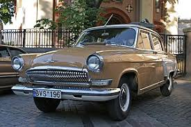
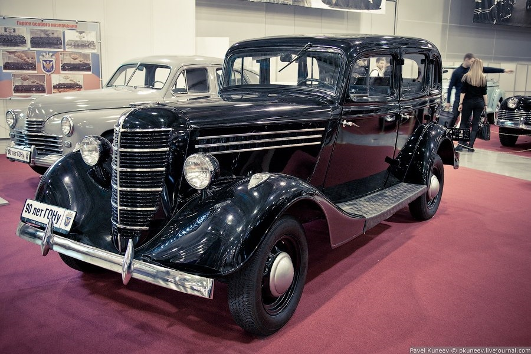
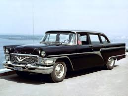
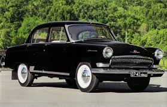

Maşınlar
GAZ-21

GAZ-M-21 "Volqa" 1956-1970-ci illərdə Qorki Avtomobil Zavodunda kütləvi istehsal edilmiş sovet biznes sinif avtomobilidir. O, dördüncü nəsildir və GAZ-M-20 Pobeda modelinin “varisi”dir. GAZ-ın özündə GAZ-21 istehsalı 15 iyul 1970-ci ilə qədər davam etdi, lakin bundan sonra uzun müddət avtomobil təmiri zavodlarında 1970-ci illərin ikinci yarısına qədər istehsal olunan "Remzavod" avtomobilləri var idi . Zavod modelinin indeksi əvvəlcə M-21, daha sonra (1965-ci ildən) - GAZ-21 idi.
GAZ-11

GAZ-11, 1930-1940-cı illərdə az miqdarda istehsal olunan Emka GAZ-M-1 əsasında hazırlanmış minik avtomobilidir. İki modifikasiya var idi: GAZ-11-73 (sedan) və GAZ-11-40 (fayton). GAZ-11 mühərriki GAZ-11 avtomobillərinə quraşdırılmışdır.
GAZ-12
ZIM (1957-ci ilə qədər), GAZ-12 - 1949-1959-cu illərdə Qorki Avtomobil Zavodunda (Molotov Zavodu) kütləvi istehsal edilmiş böyük və icraçı sinifli altı oturacaqlı və altı pəncərəli uzun sedan (bəzi dəyişikliklər - 1960-cı ilə qədər) .
“ZİM” Qorki Avtomobil Zavodunun ilk nümayəndəsi və bu (böyük) sinfin son kütləvi modelidir, istifadəsi məhdud deyil.
GAZ-12, taksi parklarında xidmət üçün və orta səviyyəli partiya və hökumət nomenklaturası üçün nəzərdə tutulmuş, lakin ən yüksək səviyyədə olmayan bir şirkət avtomobili kimi istifadə edilmişdir (onlar ZIS-101 və ya ZIS-110 avtomobili almaq hüququna malikdirlər). Bəzi hallarda şəxsi istifadə üçün də satılıb. Ümumilikdə, 1949-cu ildən 1959-cu ilə qədər bütün modifikasiyalardan 21527 nüsxə ZIM / GAZ-12 istehsal edilmişdir. 1959-cu ildə Chaika GAZ-13 modeli onu əvəz etdi.

GAZ-13 "Çayka", 1959-cu ildən 1981-ci ilə qədər Qorki Avtomobil Zavodunda kiçik seriyada istehsal olunan böyük və idarəedici sinif sovet sərnişin avtomobilidir. ZIM nəsli modeli GAZ-12 ilə əvəz olundu. Bu modeldən başlayaraq, bu (böyük) avtomobil sinfi imtiyazlı olur: onların kütləvi istehsalı dayandırılır və müəyyən səviyyəli menecerlər, sovet səfirləri (diplomatları) və xarici vətəndaşlar istisna olmaqla, onlardan heç kimin istifadəsinə icazə verilmir. Bu baxımdan, mümkün bədən rənglərinin palitrası da məhduddur. 1977-ci ildə o, növbəti nəsil modeli - Chaika GAZ-14 ilə əvəz olundu.
Qlobal avtomobil dizaynında 1950-ci ildən 1960-cı ilə qədər olan onillik bu illər ərzində istehsala buraxılan avtomobillərin sürətlə köhnəlməsinə səbəb olan yeni stilistik həllər, formalar, materiallar və texnologiyalar üçün davamlı sınaqlar, təcrübələr və axtarışlar dövrü idi. Yaradıcıları artıq Amerika avtomobil modasının sürətli inkişafını nəzərə alan böyük sinif ZIM-12 avtomobilinin (1949-1960) taleyi məhz budur. Bir neçə illik seriyalı istehsaldan sonra, onilliyin ortalarında, prim və rəsmi ZIM xarici "sinif yoldaşları" ilə müqayisədə çox arxaik görünürdü. Bir vaxtlar ona daxil olan texniki həllər tez bir zamanda köhnəldi.Buna görə də, o illərdə GAZ və digər "sərnişin" sovet avtomobil zavodlarında - ZIL, MZMA-da model xətlərinin tam sürətlə yenilənməsi fonunda ZIM-in xarici görünüşü və texnologiyası ilə başqa, daha müasir avtomobillə əvəz edilməsi məsələsi ortaya çıxdı.
Hamısı ZİM-in modernləşdirilməsi işindən başladı. Artıq 1955-ci ildə onun əsasında GAZ-12V prototipi yaradılmışdır. O, artıq “Qağayı” adını daşıyırdı və radiator barmaqlığında bu quşun silueti şəklində dekorativ detala malik idi. “B” və “G” hərflərinin təfərrüatları ilə fərqlənən ən azı iki məlum nümunəsi var. Xarici dəyişikliklər əsasən kosmetik xarakter daşıyırdı - daha zərif fara təkərləri, bədən rənginə uyğun olaraq xaricdən rənglənmiş, damalı naxışlı daha ümumiləşdirilmiş radiator barmaqlığı, bir hissəli ön şüşə, müxtəlif qapaqlar və yan qəliblər, "uzadılmış" arxa qanadlar və s.Eyni zamanda, o illərin mətbuatına görə, mühərrik gücünü artırmaq, əyləc sistemini təkmilləşdirmək və Volqada olduğu kimi avtomatik transmissiya quraşdırmaq planlaşdırılırdı.
Gaz-23

QAZ-23 "Volqa" - Qorki Avtomobil Zavodunda istehsal olunan, 1962-1970-ci illərdə adi GAZ-21 sedanı əsasında istehsal edilmiş, M-20 "Pobeda" əsasında M-20G-ni əvəz edən orta səviyyəli sovet avtomobili.
ikinci nəsil GAZ-24 Volqa əsasında GAZ-24 -24 ilə əvəz edildi. Rəsmi olaraq, qapalı sənədlərdə "yüksək sürətli nəqliyyat vasitəsi" və ya "müşayiət vasitəsi" adlanırdı və SSRİ və müttəfiq sosialist ölkələrinin KQB və digər kəşfiyyat xidmətləri üçün əsas avtomobilin daha güclü versiyası idi; adi və ya “nomenklatura” vətəndaşlara.